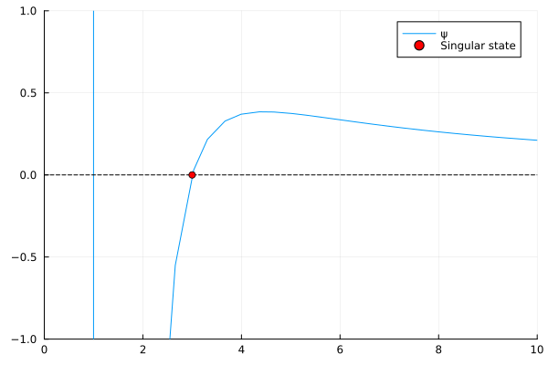
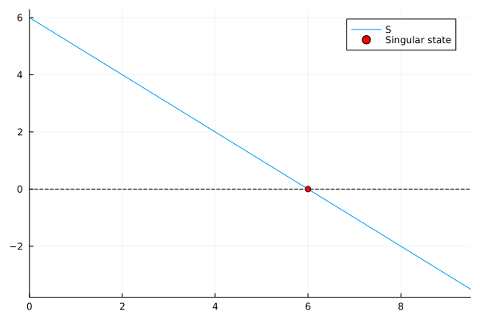
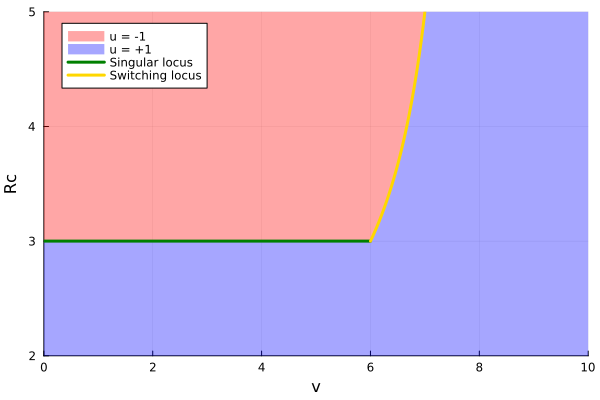

Optimal Synthesis
This section shows how to construct optimal synthesis associated to (OCP). Roughtly, an optimal synthesis corresponds to a partition of the state space into regions where different control strategies are optimal. To do this, we need to compute the singular locus and the switching locus.
First of all, let's import the required packages for this page.
# Import required packages for optimal control analysis
using Plots # For plotting and visualization
using OptimalControl # For optimal control tools
using ForwardDiff # For automatic differentiation
using Roots # For root finding algorithms
using OrdinaryDiffEq # For solving differential equationsModel definition
Let remark that the (OCP) problem is affine with respect to the control. The state and the cost dynamic can be written as
\[\dot x = f(Rc) + u \cdot g(Rc)\]
where $x = [e, R_c, v]$ is the augmented state, and where functions $f$ and $g$ are defined in the follwing code.
# Model parameters for the membrane filtration system
μ = 1; R₀ = 1; η = 1; Jf = 1; Jb = 1; C = 1; b = 1; ω = 1; A = 1;
vf = 10;
# Define the vector field f(Rc) for the membrane filtration dynamics
# This function represents the system dynamics with control u = +1
f(Rc) = [
(μ * (R₀ + Rc) / (2 * η))*(Jf^2 + Jb^2),
(Jf * b * C - Jb * ω * Rc)/2,
A*(Jf - Jb)/2
]
# Define the vector field g(Rc) for the membrane filtration dynamics
# This function represents the system dynamics with control u = -1
g(Rc) = [
(μ * (R₀ + Rc) / (2 * η))*(Jf^2 - Jb^2),
(Jf * b * C + Jb * ω * Rc)/2,
A*(Jf + Jb)/2
]Singular locus
The goal now is to compute the singular locus. To do this, we need first to compute the singular locus.
Since the system is affine with respect to the control, the hamitonian is also affine with respect to the control, and can be written as
\[H(R_c, p, u) = H_0(R_c, p) + u \cdot H_1(R_c, p),\]
where
\[H_0(R_c, p) = p \cdot f(R_c) \quad \text{and} \quad H_1(R_c, p) = p \cdot g(R_c)\]
where $p = [-1, p_2, p_3]$ is the augmented costate.
Thanks to the maximization condition of the Pontryagin maximum principle, the optimal control is given for almost all $t \in [t_0, t_f]$ by
\[u(t) \left\{ \begin{array}{ll} = +1 & \text{if } H_1(R_c(t), p(t)) > 0 \\[0.5em] = -1 & \text{if } H_1(R_c(t), p(t)) < 0 \\[0.5em] \in [-1, 1] & \text{if } H_1(R_c(t), p(t)) = 0 \end{array} \right.\]
A singular arc corresponds to an interval of time $I \subset [t_0, t_f]$ such that $H_1(R_c(t), p(t)) = 0$ for all $t \in I$. Since the final time $t_f$ is free, one has $H(R_c(t_f), p(t_f)) = 0$ for all $t \in [t_0, t_f]$. By using
\[H_0(R_c, p) = H_1(R_c, p) = 0\]
one can deduce that $p_1(t) = \alpha(R_c(t))$ and $p_2(t) = \beta(R_c(t))$ for all $t \in I$, where functions $\alpha$ and $\beta$ are defined on the code below.
# Compute the main functions
Δ(Rc) = f(Rc)[2]*g(Rc)[3] - f(Rc)[3]*g(Rc)[2]
α(Rc) = (f(Rc)[1]*g(Rc)[3] - f(Rc)[3]*g(Rc)[1]) / Δ(Rc)
β(Rc) = (f(Rc)[2]*g(Rc)[1] - f(Rc)[1]*g(Rc)[2]) / Δ(Rc)
# Compute the derivative of β with respect to Rc using automatic differentiation
dβ(Rc) = ForwardDiff.derivative(β, Rc)
# Compute the function ψ(Rc) = -dβ/Δ, used to find the singular state
ψ(Rc) = -dβ(Rc) /Δ(Rc)
# Find the singular state by solving ψ(Rc) = 0
Rc_sing = Roots.find_zero(ψ, 2.5)
println("Singular state : ", Rc_sing)
# Create a visualization plot of the ψ function
plt = plot(xlim = (0, 10), ylim = (-1, 1))
plot!(plt, ψ, 0, 10, label = "ψ")
plot!(plt, [0, 10], [0, 0], label = nothing, color = :black, ls = :dash)
scatter!(plt, [Rc_sing], [0], label = "Singular state", color = :red)
This section defines the Hamiltonian function and the singular control. The following code creates flow objects for each Hamiltonian, computes the end of the singular arc by finding the zero of the function S, and plots the switching function.
Moreover, on the singular arc, the state $R_c(t)$ remains constant, and the singular control cancel $\dot R_c$ which leads to
\[u(t) = \]
# Define the Hamiltonian function H(x,p,u) = p'*(f(x[2]) + u*g(x[2]))
H(x,p,u) = p'*(f(x[2]) + u*g(x[2]))
# Define the singular control function uₛ(Rc) = -f₂(Rc)/g₂(Rc)
uₛ(Rc) = -f(Rc)[2]/g(Rc)[2]
# Define the Hamiltonian associated to u = -1, u = +1 and u = uₛ(x)
H₋(x,p) = H(x,p,-1)
H₊(x,p) = H(x,p,+1)
Hₛ(x,p) = H(x,p,uₛ(x[2]))
# Create flow objects for each Hamiltonian
ϕ₋ = Flow(OptimalControl.Hamiltonian(H₋))
ϕ₊ = Flow(OptimalControl.Hamiltonian(H₊))
ϕₛ = Flow(OptimalControl.Hamiltonian(Hₛ))
# Function to find the end of the singular arc
function S(v0)
x0 = [0, Rc_sing, v0] # Initial state
p0 = [-1, α(Rc_sing), β(Rc_sing)] # Initial costate
cb = ContinuousCallback((z,_,_) -> z[3] - vf, terminate!) # Stop when v = vf
xf, pf = ϕ₊(0, x0, p0, 100, callback = cb) # Integrate forward
return pf[2] # Return final costate
end
# Compute the end of the singular arc by finding the zero of the function S
v_sing = Roots.find_zero(S, 5)
println("End of the singular locus on the v state = ", v_sing)
# Plot the function S
plt = plot(xlim = (0, 9.5))
plot!(plt, S, label = "S")
plot!(plt, [0,10], [0,0], label = nothing, color = :black, ls = :dash)
scatter!(plt, [v_sing], [0], label = "Singular state", color = :red)
Switching locus
This section computes the switching locus for optimal control synthesis. The following code defines the function S(Rc,v), computes its partial derivatives using automatic differentiation, and solves the differential equation to find the switching locus.
# Define the plot limits for the synthesis
xlim = [0, vf]; ylim = [2, 5];
# Define the function S(Rc,v) such that if (Rc,v) is on the switching locus, then S(Rc,v) = 0
function S(Rc,v)
x0 = [0., Rc, v] # Initial state
p0 = [-1, α(Rc), β(Rc)] # Initial costate
cb = ContinuousCallback((z,_,_) -> z[3] - vf, terminate!) # Stop when v = vf
xf, pf = ϕ₊(0, x0, p0, 100, callback = cb) # Integrate forward
return pf[2] # Return final costate
end
# Compute partial derivatives of S using automatic differentiation
dSdRc(Rc, v) = ForwardDiff.derivative(Rc -> S(Rc,v), Rc) # Derivative w.r.t Rc
dSdv(Rc, v) = ForwardDiff.derivative(v -> S(Rc,v), v) # Derivative w.r.t v
# Define the differential equation associated to the switching locus: dv/dRc = -dSdRc/dSdv
lhs(v,_,Rc) = -dSdRc(Rc, v)/dSdv(Rc, v)
# Solve the ODE to compute the switching locus from Rc_sing to ylim[2]
prob = ODEProblem(lhs, v_sing, (Rc_sing, ylim[2]), saveat=0.01)
SL = solve(prob, Tsit5())This section creates the synthesis plot showing the optimal control regions. The following code visualizes the regions where control u = -1 and u = +1 are optimal, along with the singular locus and switching locus.
# Create the synthesis plot showing the optimal control regions
synthesis = plot(xlim = xlim, ylim = ylim, xlabel = "v", ylabel = "Rc", legend = :topleft)
# Plot the region where control u = -1 is optimal (red shape)
plot!(synthesis,
[xlim[1]; v_sing; SL.u; xlim[1]],
[Rc_sing; Rc_sing; SL.t; ylim[2]],
st=:shape, linecolor = nothing, label = "u = -1", fillcolor = :red, fillalpha = 0.35)
# Plot the region where control u = +1 is optimal (blue shape)
plot!(synthesis,
[xlim[1]; v_sing; SL.u; xlim[2]; xlim[2]; xlim[1]],
[Rc_sing; Rc_sing; SL.t; ylim[2]; ylim[1]; ylim[1]],
st=:shape, linecolor = nothing, label = "u = +1", fillcolor = :blue, fillalpha = 0.35)
# Plot the singular locus (green line)
plot!(synthesis, [xlim[1], v_sing], [Rc_sing, Rc_sing], label = "Singular locus", c=:green, lw=3)
# Plot the switching locus (gold line)
plot!(synthesis, SL.u, SL.t, label = "Switching locus", c=:gold, lw=3)